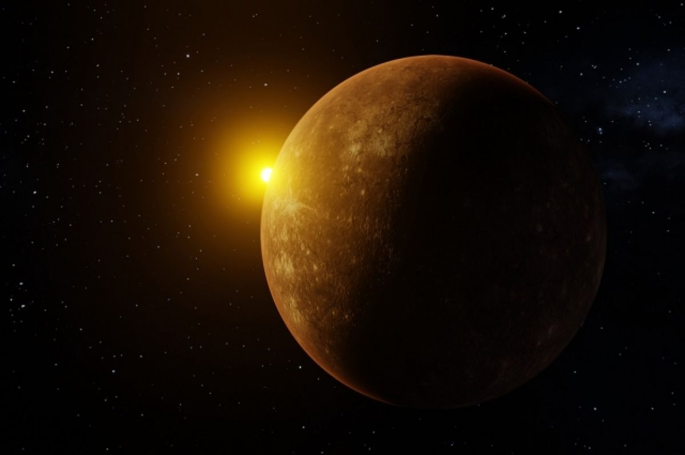

Меркурий
Открыть карту солнечной системыСамая близкая к Солнцу и самая маленькая планета солнечной системы — Меркурий лишь немного больше Луны. Меркурий получает в семь раз больше тепла и света, чем Земля, поэтому температура его поверхности колеблется от +430°C днём до −190°C ночью. Это самый большой температурный перепад в солнечной системе.
Несмотря на то что люди наблюдали Меркурий на небе с древнейших времён, известно о нём немного. Первый снимок его поверхности был получен только в 1974 году. Она оказалась покрыта многочисленными кратерами и скалами.

Основные характеристики
Атмосфера практически отсутствует — возможно, причиной тому солнечное излучение, а может быть, небесное тело такого размера просто не в состоянии удерживать плотную газовую оболочку.
Поскольку для оборота вокруг Солнца Меркурию нужно пройти гораздо меньшее расстояние, чем Земле, год на нём значительно короче — всего 88 земных суток. За один меркурианский день успевает пройти более двух местных лет. Поскольку ось вращения планеты почти не наклонена, год на ней не делится на сезоны.
Меркурий назван по имени древнеримского бога торговли и хитрости.
